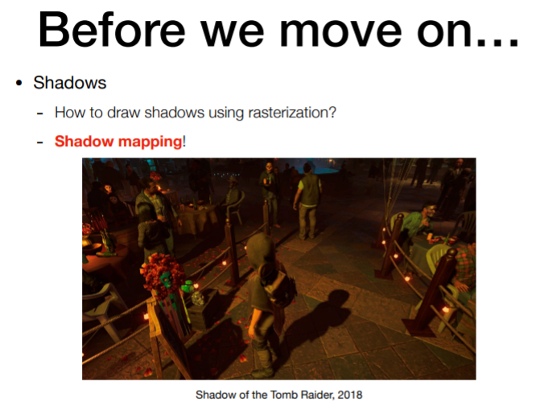

L13~14 Ray Tracing (1)
Whitted风格光线追踪
1 引入——Shadow Mapping 阴影贴图
之前提到光栅化的着色，我们知道这是一种局部的现象。着色的过程中，我们只会考虑着色点自己，光源，以及摄像机。我们不考虑其他物体，甚至不考虑物资自身的其他部分对着色点的影响。而事实上是会有遮挡的关系的，是会有阴影的。
Shadow Mapping这个方法是一种图像空间的做法。关键思想在于——如果有点不在阴影里，那么这个点可以被摄像机和光源都看到。

1.1 阴影贴图原理
- 从光源看向场景，做一遍光栅化，得到光源能看到什么
- 把这个图的深度记下来
- 从摄像机出发，再次看向这个场景
- 把现在看到的点，投影回光源刚才看到的投影平面上进行深度比较


1.2 存在的问题
- 硬阴影（点光源）
- 阴影图的分辨率
- 浮点数的比较

2 Why Ray Tracing?
光栅化不好做全局的效果，比如软阴影，光泽反射，间接光照。


3 基本光线跟踪算法
3.1 光线定义
- 光沿直线传播
- 不发生碰撞
- 是从光源到人眼的（根据光路可逆性，应用时会采取从人眼到光源的方法）
3.2 Ray Casting 光线投射


3.3 递归(Whitted风格)光线追踪
光线可以弹射很多次，在每一个弹射点都会去计算着色的值，然后把它们都加回这个像素的值里面去。


4 光线与物体相交
4.1 光线与隐式表面相交


4.2 光线与显式表面求交
三角形肯定在一个平面内，所以问题可以被分成两部分：光线是否和平面有交点；这个交点在不在三角形内部。


5 轴对齐包围盒（AABB）
包围盒的思想是，将一个复杂的物体，用简单的形状围起来，保证物体一定在这个简单的形状之内。如果光线连包围盒都碰不到，那肯定碰不到包围盒里的物体。


6 加速结构
6.1 均匀空间划分


6.2 KD树
KD树每次沿着某一个轴砍开，并且只砍一刀。空间被划分成类似二叉树的结果。

6.3 物体划分 & BVH
BVH不从空间划分，而是从物体开始划分。一个物体只会出现在一个节点里，并且不用算三角形和包围盒求交了。


到这里我们算是讲完了Whitted风格的光线追踪。